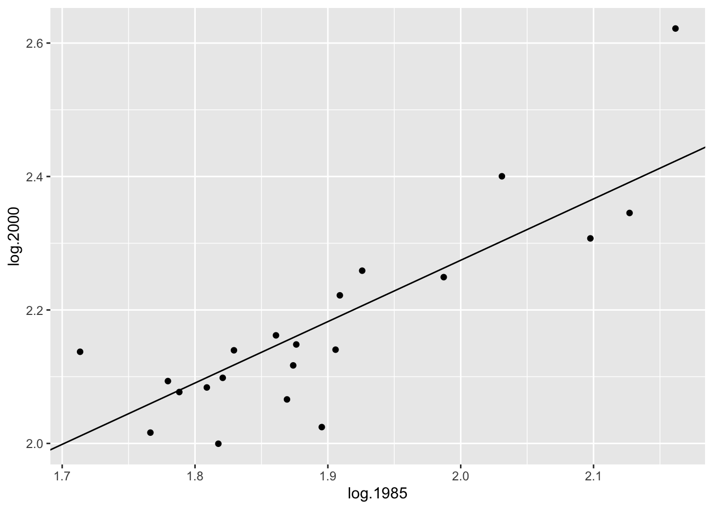
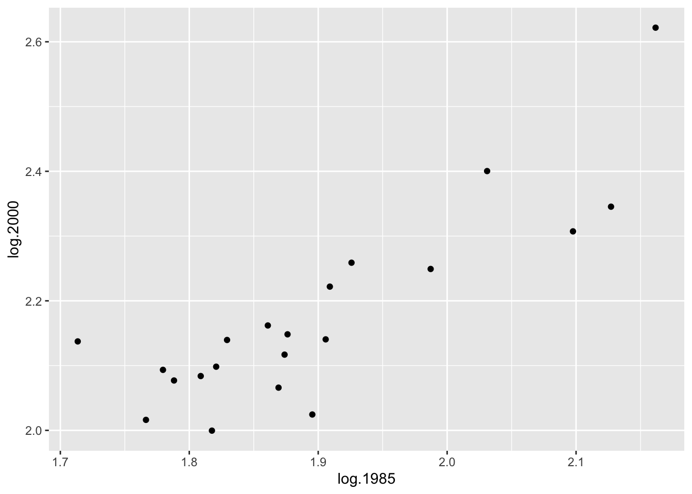
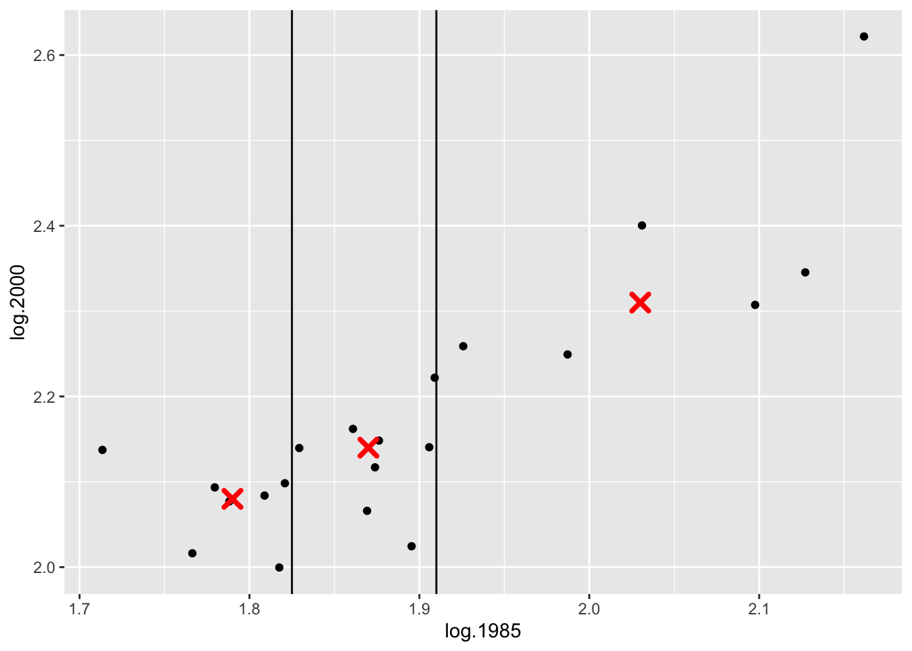

13 Resistant Line
In this lecture, we start to explore paired data where you suspect a relationship between \(x\) and \(y\). The focus here on how to fit a line to data in a ``resistant” fashion, so the fit is relatively insensitive to extreme points.
13.1 Meet the data
Our data today is taken from the 2001 New York Times Almanac, p. 287. A table is shown which gives the median sales prices (in thousands of dollars) of existing single-family homes for selected metropolitan areas for the years 1985, 1990, 1995, 1999, and 2000. We will look only at the years 1985 and 2000 and delete the cities for which either the 1985 or the 2000 median house price is missing.
This dataset is available as home.prices in the LearnEDAfunctions package:
library(LearnEDAfunctions)
library(tidyverse)
head(home.prices)## City y1985 y2000
## 1 Atlanta 66.2 125.4
## 2 Baltimore 72.6 145.2
## 3 Chicago 81.1 166.7
## 4 Cincinnati 60.2 124.0
## 5 Cleveland 64.4 121.3
## 6 Denver 84.3 181.5We start by plotting these data on a scatterplot where the \(x\) variable is the 1985 price and the \(y\) variable is the 2000 price. We get the following figure.
ggplot(home.prices, aes(y1985, y2000)) +
geom_point()
We see a positive trend in this graph which makes sense – cities that had high house prices in 1985 tended also to have high prices in 2000. We want to describe this relationship using a simple function like a line.
But this is not the best graph of these data. Why? Well, most of the points fall in the lower left portion of the figure. This happens since both the set of 1985 house prices and the 2000 house prices are right skewed. We can improve this plot by reexpressing both the x and y variables by a power transformation. We’ll talk more later about reexpressing variables in graphs, but take my word that a good reexpression to use in this case is a log.
If we take logs of both sets of house prices, we get a new scatterplot of the log (1985 prices) and log (2000 prices). Looking at the figure, note that the points are more evenly spread out – from left to right and from down to up.
home.prices %>%
mutate(log.1985 = log10(y1985),
log.2000 = log10(y2000)) -> home.prices
ggplot(home.prices, aes(log.1985, log.2000)) +
geom_point()
Since there appears to be a linear relationship between log (2000 price) and log (1985 price), it seems reasonable to fit a line. We describe a simple way of fitting a line that is not sensitive to outlying points – we call this procedure a resistant line.
13.2 Three summary points
The first step to fitting a line
- divides the data into three groups and then
- finds a summary point in each group
We divide the data by the \(x\)-values – the lower third of the x-values form the first group, the middle third of the \(x\)-values form the 2nd group, and the upper third of the \(x\)-values make up the third group. This works fine if we have, say 15 points – then an equal number will be in each group. If we have 16 points, it’s reasonable to make the group sizes 5, 6, 5; if we have 17 points, then a symmetric way to go assigns 6, 5, 6 to the groups.
Here we have 21 cities, so there will be 7 cities in each group.
Our summary point for a group will be
(median x value, median y value).In the below table, the data has been sorted by 1985 price.
home.prices %>%
select(City, log.1985, log.2000) %>%
arrange(log.1985)## City log.1985 log.2000
## 1 Detroit 1.713491 2.137354
## 2 Tampa 1.766413 2.016197
## 3 Cincinnati 1.779596 2.093422
## 4 Kansas_City 1.788168 2.077004
## 5 Cleveland 1.808886 2.083861
## 6 St._Louis 1.817565 1.999565
## 7 Atlanta 1.820858 2.098298
## 8 Milwaukee 1.829304 2.139564
## 9 Baltimore 1.860937 2.161967
## 10 Philadelphia 1.869232 2.065953
## 11 Phoenix 1.873902 2.116940
## 12 Minneapolis 1.876218 2.148294
## 13 Houston 1.895423 2.024486
## 14 Miami 1.905796 2.140508
## 15 Chicago 1.909021 2.221936
## 16 Denver 1.925828 2.258877
## 17 Wash._D.C. 1.987219 2.249198
## 18 San_Diego 2.031004 2.400365
## 19 Los_Angeles 2.097604 2.307282
## 20 New_York_City 2.127105 2.345374
## 21 San_Francisco 2.161667 2.621799The first group consists of the seven cities with the smallest 1985 house prices. The median of the log 1985 prices for this group is 1.79 and the median of the log 2000 prices is 2.08 – so the left summary point is \[ (x_L, y_L) = (1.79, 2.08). \]
In a similar fashion, we find summary points for the center and right groups: \[ (x_C, y_C) = (1.87, 2.14), \, \, (x_R, y_R) = (2.03, 2.31). \] (Note that a summary point may or may not be an actual data point.)
In the figure below, we’ve drawn vertical lines showing the division of the points into three groups, and the summary points are indicated by red dots.
ggplot(home.prices, aes(log.1985, log.2000)) +
geom_point() +
geom_vline(xintercept = c(1.825, 1.91)) +
geom_point(data = data.frame(x=c(1.79, 1.87, 2.03),
y=c(2.08, 2.14, 2.31)),
aes(x, y), size = 3, color="red",
shape = 4, stroke = 2)
13.3 Fitting a line to three points
We all know how to fit a line that goes through two points. How about a line that goes through (approximately) three points?
We write the line in the form \[ y = a_0 + b_0 (x - x_C) , \] where \(b_0\) is the slope and \(a_0\) is the value of \(y\) when \(x\) is equal to the middle summary point \(x_C\).
We find the slope of this line by using the left and right summary points: \[ b_0 = \frac{y_R - y_L}{x_R - x_L} . \] Actually, it is better to work with the summary points in R computed to higher precision. Here the slope would be
(b0 <- 0.920)## [1] 0.92To find the intercept, we first note that $ a_0 = y - b_0 (x - x_C), $ and then define \(a_0\) to be the mean of the {\(y - b_0(x - x_C)\)}, averaged over the three summary points: \[ a_0 = \frac{1}{3} \left([y_L - b_0 (x_L - x_C)] + y_C + [y_R - b_0 (x_R - x_C) ] \right). \] Here the intercept turns out to be
(a0 <- 2.155)## [1] 2.155So the three-group line is
\[
y = .920 (x - 1.87) + 2.155
\]
This line is graphed on the scatterplot below.
ggplot(home.prices, aes(log.1985, log.2000)) +
geom_point() +
geom_abline(slope = 0.920,
intercept = -0.920 * 1.87 + 2.155) 
13.4 Improving the line by fitting a line to the residuals
Is this the best line through the points? To check, we examine the residuals which are the vertical deviations from the points to the line. A little more formally, we define a residual as \[ RESIDUAL = DATA - FIT, \] where \(DATA\) is the \(y\) value and \(FIT\) is the predicted value of \(y\) from the line fit:
\[ FIT = a_0 + b_0 (x - x_C). \]
Let’s find the residual for Detroit. Its \(y\) value (log 2000 house price) is \(DATA = 2.14\) and its predicted value from the line is
\[
FIT = .920 (1.71 - 1.87) + 2.155 = 2.01
\]
so Detroit’s residual is
\[
RESIDUAL = 2.14 - 2.01 = .013 .
\]
The following R code uses the function rline to fit a single iteration of the resistant line. Outputs of this function are the intercept and slope, value of \(x_C\), and the residuals. We create
a data frame that shows the fits and residuals for all cities.
myfit <- rline(log.2000 ~ log.1985, home.prices)
home.prices <-
mutate(home.prices,
FIT = myfit$a + myfit$b * (log.1985 - myfit$xC),
RESIDUAL = log.2000 - FIT)
select(home.prices, City, log.1985, log.2000, FIT, RESIDUAL)## City log.1985 log.2000 FIT RESIDUAL
## 1 Atlanta 1.820858 2.098298 2.106212 -0.0079142188
## 2 Baltimore 1.860937 2.161967 2.143086 0.0188805053
## 3 Chicago 1.909021 2.221936 2.187326 0.0346095764
## 4 Cincinnati 1.779596 2.093422 2.068249 0.0251725826
## 5 Cleveland 1.808886 2.083861 2.095197 -0.0113360002
## 6 Denver 1.925828 2.258877 2.202789 0.0560875782
## 7 Detroit 1.713491 2.137354 2.007428 0.1299258047
## 8 Houston 1.895423 2.024486 2.174815 -0.1503292285
## 9 Kansas_City 1.788168 2.077004 2.076136 0.0008686638
## 10 Los_Angeles 2.097604 2.307282 2.360832 -0.0535502542
## 11 Miami 1.905796 2.140508 2.184359 -0.0438508423
## 12 Milwaukee 1.829304 2.139564 2.113982 0.0255819655
## 13 Minneapolis 1.876218 2.148294 2.157146 -0.0088515042
## 14 New_York_City 2.127105 2.345374 2.387974 -0.0426004858
## 15 Philadelphia 1.869232 2.065953 2.150718 -0.0847650389
## 16 Phoenix 1.873902 2.116940 2.155015 -0.0380748953
## 17 St._Louis 1.817565 1.999565 2.103182 -0.1036168913
## 18 San_Diego 2.031004 2.400365 2.299557 0.1008083642
## 19 San_Francisco 2.161667 2.621799 2.419774 0.2020256651
## 20 Tampa 1.766413 2.016197 2.056119 -0.0399221336
## 21 Wash._D.C. 1.987219 2.249198 2.259272 -0.0100741031We graph the residuals on the vertical axis against the log 1985 prices below.
ggplot(home.prices, aes(log.1985, RESIDUAL)) +
geom_point() +
geom_hline(yintercept = 0, color = "red")
To see if we have fit a good line, we look for a pattern in the residuals. If there is some pattern – say, the residual plot seems to be increasing, then this tells us that we can improve our line fit.
We try to improve our line fit by fitting a line to the \((x, RESIDUAL)\) data. We use the same 3-group method to fit our line. Some of the calculations are summarized in the table above.
We first find three summary points. We already know the summary x values are 1.79, 1.87, 2.03. Looking at the residuals in each group, we find the summary residual values are respectively 0, -.03, .03. So our 3 summary points are \[ (1.79, 0), (1.87, -.03), (2.03, .03) \]
We find the slope d0 and the intercept g0 as we did before. The slope is \[ d0 = (.03 - 0) / (2.03 - 1.79) = .125\] and the intercept is \[ g0 = 1/3[(0 - .125 (1.79 - 1.87)) + (-.03) + (.03 - .125 (2.03 - 1.87))] = -.003 \] So our line fit to the (x, RESIDUAL) data is \[ RESID = -.003 + .125 (x - 1.87) \]
Our new fit to the \((x, y)\) data has the form \[ y = a_1 + b_1 (x - x_C), \]
where we find the slope \(b_1\) and the intercept \(a_1\) are found by adding the slopes and intercepts from the two fits: \[ b_1 = b_0 + d_0, a_1 = a_0 + g_0. \] Here \[ b_1 = .958 + .125 = 1.083, a_1 = 2.151 - .003 = 2.148.\] So our new fit to the data is \[ y = 1.083 (x - 1.87) + 2.15 \]
Now we can continue this procedure as follows:
- Find the residuals from this fit.
- Find three summary points of (x, RESID) and fit a 3-group line.
- Update the slope and intercept of the fit to the (x, y) data.
In practice, we do this on R, and continue this procedure until there is little change in the adjustments to the slope and intercept.
For our example, I had the the function rline do ten iterations of this procedure with the following results (SLOPE is the current estimate of the slope of the resistant line and INTERCEPT is the current estimate at the intercept).
Results <- data.frame(Iteration=NULL, Slope=NULL, Intercept=NULL)
for(iterations in 1:10){
fit <- rline(log.2000 ~ log.1985, home.prices,
iter=iterations)
Results <- rbind(Results,
data.frame(Iteration=iterations,
Slope=fit$b, Intercept=fit$a))
}
Results## Iteration Slope Intercept
## 1 1 0.9200503 2.155015
## 2 2 1.0951636 2.147055
## 3 3 1.2067010 2.149614
## 4 4 1.2777029 2.151248
## 5 5 1.3194267 2.152652
## 6 6 1.3439454 2.153477
## 7 7 1.3583537 2.153962
## 8 8 1.3668206 2.154247
## 9 9 1.3717961 2.154415
## 10 10 1.3747200 2.154513Note that after ten iterations, the procedure has essentially converged and the resistant line has equation
\[
y = 1.3747 (x - 1.87) + 2.1545
\]
This is typically the case, although there exist some examples where the procedure doesn’t converge.
13.5 Comparison with a Least-Squares Fit
We have just described a resistant method of fitting a line. We should explain why this is preferable to the popular least-squares fit that you learned in your first stats course.
The least-squares fit to these data is given by
lm(log.2000 ~ I(log.1985 - 1.87), data=home.prices)##
## Call:
## lm(formula = log.2000 ~ I(log.1985 - 1.87), data = home.prices)
##
## Coefficients:
## (Intercept) I(log.1985 - 1.87)
## 2.148 1.044If you compare the resistant line with the least-squares line, they look pretty close. The slope of the resistant line is .88 which is a little bit smaller than the least-squares slope of 1.04.
The big difference between the two fits is how they react to outliers. To illustrate this, notice that San Francisco has an median house price of 418.6 (thousand dollars). Suppose instead that the median price was 1000, so log median price = 3.00 (instead of 2.62). What effect would this change have on our line fits?
We refit these data (with the unusally large price) using the resistant and least-squares methods.
home.prices %>%
mutate(log.2000a = log.2000,
log.2000a = replace(log.2000a, y2000 == 418.6,
3.00)) -> home.prices
rline(log.2000a ~ log.1985,
home.prices, 5)[c("a", "b", "xC")]## $a
## [1] 2.152652
##
## $b
## [1] 1.319427
##
## $xC
## [1] 1.873902lm(log.2000a ~ I(log.1985 - 1.874), data = home.prices)##
## Call:
## lm(formula = log.2000a ~ I(log.1985 - 1.874), data = home.prices)
##
## Coefficients:
## (Intercept) I(log.1985 - 1.874)
## 2.162 1.384The resistant line is
\[
y = 1.319 (x - 1.874) + 2.153
\]
which is identical to the line that we found earlier. The change in the largest house price had no effect on the fits since the resistant line is based on computing median values of \(x\) and \(y\) in each group.
In contrast, the least-squares fit with the large house price is
\[
y = - 0.408 + 1.38 x
\]
which is different from the earlier least-squares fit – the slope has increased from 1.04 to 1.37. So a single extreme observation can have a big effect on the least-squares fit. The least-squares line suffers from the same lack-of-resistance problem as our familiar measure of center, the mean.
13.6 Interpreting the fit
Remember we initially reexpressed the house price data to logs – can we express our ``best line” in terms of the original house price data?
Our resistant line fit was
\[
y = 1.3747 (x - 1.87) + 2.1545
\]
or
\[
y = 1.3747 x -0.416189
\]
which means
\[
\log ({\rm house \, price \, in \, 2000}) = 1.3747 \log(
{\rm house \, price \, in \, 1985}) -0.416189.
\]
If we take each side to the 10th power, we get the equivalent equation \[ {\rm house \, price \, in \, 2000} = [{\rm house \, price \, in \, 2000}]^{1.3747} \times 10^{- 0.416}. \]
So a linear fit to the \((\log x, \log y)\) data is the same as an exponential-type fit in the \((x, y)\) data.